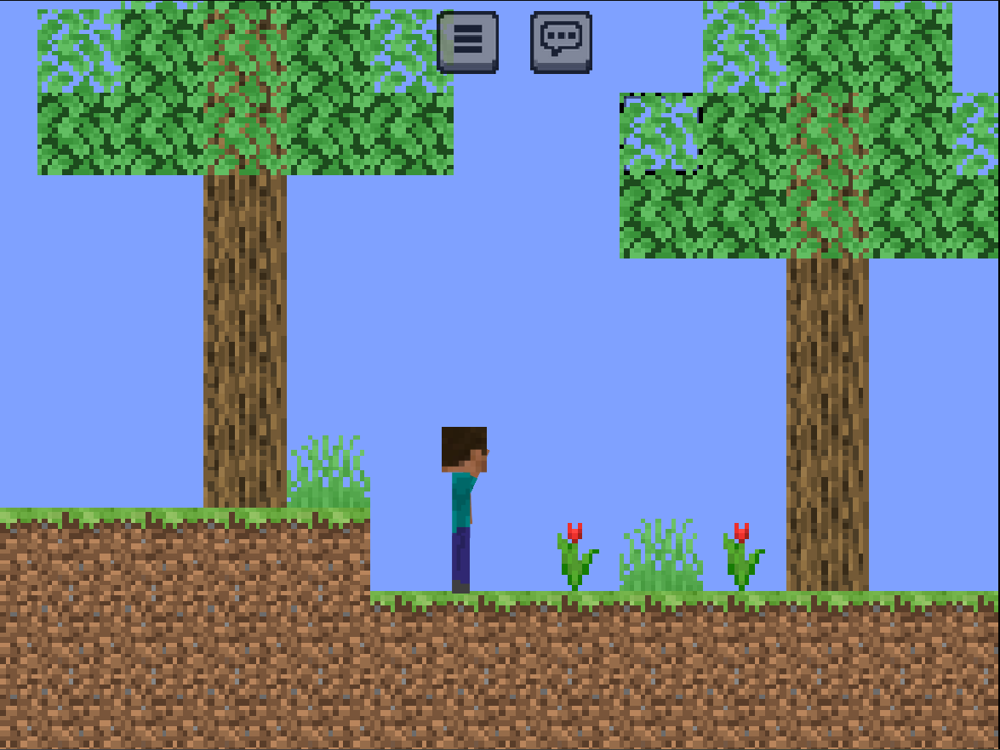

Version 24w31a Changelog
Date: 28-07-2024
This snapshot brings some clean up to old, legacy code that is no longer needed, and adds some new features and bugs fixed

Test the latest version Test it!
Additions
- Commands: /generate
will generate terrain to the left or right by the number provided - Oak Trees: Hovering mouse over oak saplings will grow the tree
- Spruce Trees: Hovering mouse over spruce saplings will grow the tree
- Pressing K will kill all mobs (excluding player)
Changes
- Adjusted textures of game rules on-off to be consistent sizes
- Improved performance of generating new chunks (6x)
- Seperated biome blocks from surface decoration
- Surface decoration won't generate underwater anymore
- Made all biomes 4x larger
- Sped up loading screen time
- Removed transitions between screens on menu
Removals
- Legacy Bug reporting code that is replaced with Google Forms reporter
- Pressing B will no longer open the bug tracker, the menu button must be used instead
Bugs Fixed
- [MCSE-14] Surface decoration generates underwater where it shouldn't
- [MCSE-19] WIndswept Savanna generates signs, not trees
- [MCSE-20] Melons, saplings and grass underwater
- [MCSE-26] Laggy when generating new chunks
- [MCSE-29] f3 menu (i key) entity counter doesnt update
- [MCSE-30] Pressing p will regenerate the tile grid, but also do the "generate until scratch length limit" so makes terrible performance
- [MCSE-31] entities dont respect relative position, and only use absolute relative to the tile grid
- [MCSE-32] the JSON that defines the entity is absolute, not relative, so when going to the left, they "shift"
Known Bugs
- Entities have a tendency to walk out of frame, and they will get "stuck" so cause lag on re-entering those areas